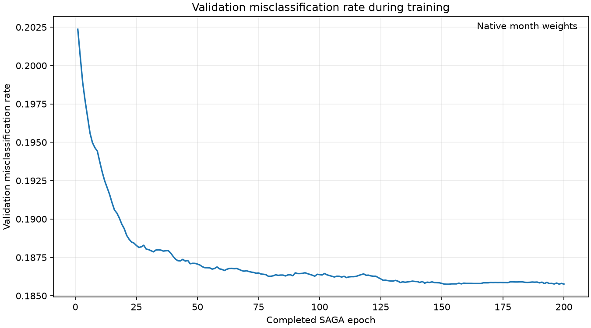
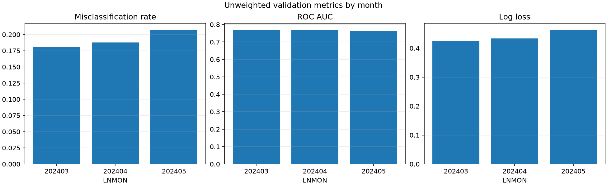
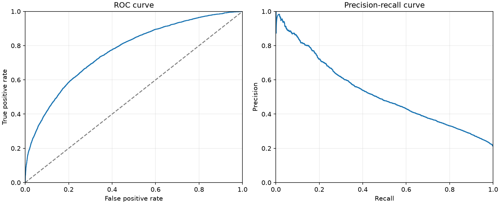
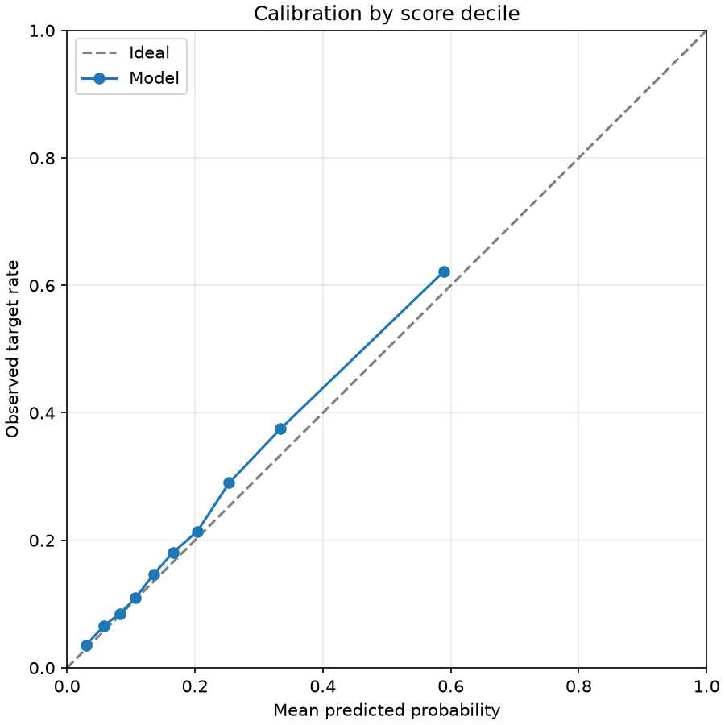
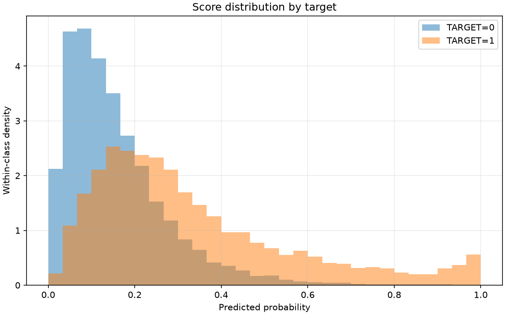
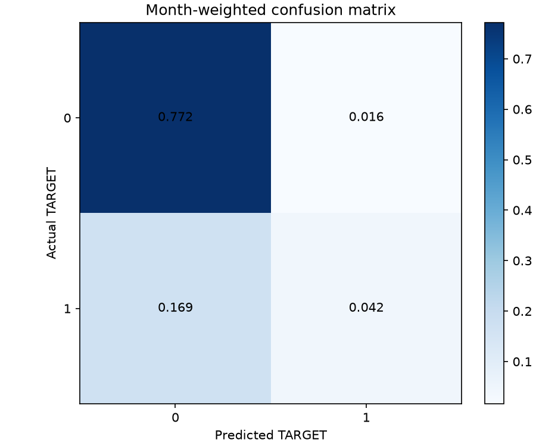

Final validation misclassification rate at probability > 0.5: 0.185761
The training curve uses the model's original validation protocol. Scores describe undersampled data, not an independent test set.
| scope | month | rows | target_1_rows | target_1_rate | misclassification_rate | roc_auc | average_precision | log_loss | brier_score |
|---|---|---|---|---|---|---|---|---|---|
| overall_unweighted | all | 41772 | 9173 | 0.21960 | 0.19250 | 0.76673 | 0.53146 | 0.44109 | 0.14022 |
| overall_weighted | all | 41772 | 9173 | 0.21173 | 0.18576 | 0.76787 | 0.52302 | 0.43129 | 0.13635 |
| monthly_unweighted | 202403 | 13093 | 2703 | 0.20645 | 0.18117 | 0.76864 | 0.51718 | 0.42496 | 0.13377 |
| monthly_unweighted | 202404 | 13966 | 2989 | 0.21402 | 0.18788 | 0.76794 | 0.52767 | 0.43349 | 0.13744 |
| monthly_unweighted | 202405 | 14713 | 3481 | 0.23659 | 0.20696 | 0.76423 | 0.54894 | 0.46265 | 0.14860 |
| evaluation | protocol | months | month_weighted | misclassification_rate |
|---|---|---|---|---|
| training_protocol | v2 | 202403,202404,202405 | True | 0.18576 |
| selected_protocol | v2 | 202403,202404,202405 | True | 0.18576 |
| actual | predicted | rows | weight_sum |
|---|---|---|---|
| 0 | 0 | 31960 | 0.77195 |
| 0 | 1 | 639 | 0.01632 |
| 1 | 0 | 7402 | 0.16944 |
| 1 | 1 | 1771 | 0.04229 |
| decile | rows | weight_sum | mean_probability | observed_target_rate |
|---|---|---|---|---|
| 1 | 4178 | 0.09981 | 0.02991 | 0.03594 |
| 2 | 4177 | 0.10078 | 0.05761 | 0.06573 |
| 3 | 4177 | 0.10005 | 0.08232 | 0.08492 |
| 4 | 4177 | 0.10051 | 0.10737 | 0.10962 |
| 5 | 4177 | 0.10137 | 0.13521 | 0.14661 |
| 6 | 4178 | 0.10009 | 0.16599 | 0.18106 |
| 7 | 4177 | 0.10007 | 0.20374 | 0.21401 |
| 8 | 4177 | 0.09967 | 0.25349 | 0.29005 |
| 9 | 4177 | 0.09790 | 0.33361 | 0.37476 |
| 10 | 4177 | 0.09976 | 0.58880 | 0.62161 |
| threshold | weighted_true_positive | weighted_false_positive | weighted_true_negative | weighted_false_negative | misclassification_rate | precision | recall | specificity |
|---|---|---|---|---|---|---|---|---|
| 0.10000 | 0.19076 | 0.48771 | 0.30056 | 0.02097 | 0.50868 | 0.28117 | 0.90096 | 0.38129 |
| 0.20000 | 0.14070 | 0.21502 | 0.57324 | 0.07103 | 0.28605 | 0.39554 | 0.66454 | 0.72722 |
| 0.30000 | 0.09261 | 0.08670 | 0.70156 | 0.11913 | 0.20583 | 0.51646 | 0.43737 | 0.89001 |
| 0.40000 | 0.06142 | 0.03708 | 0.75119 | 0.15031 | 0.18739 | 0.62359 | 0.29008 | 0.95297 |
| 0.50000 | 0.04229 | 0.01632 | 0.77195 | 0.16944 | 0.18576 | 0.72155 | 0.19975 | 0.97930 |
| 0.60000 | 0.02919 | 0.00713 | 0.78114 | 0.18254 | 0.18966 | 0.80381 | 0.13788 | 0.99096 |
| 0.70000 | 0.01987 | 0.00322 | 0.78505 | 0.19186 | 0.19508 | 0.86054 | 0.09385 | 0.99591 |
| 0.80000 | 0.01318 | 0.00176 | 0.78651 | 0.19855 | 0.20031 | 0.88242 | 0.06224 | 0.99777 |
| 0.90000 | 0.00870 | 0.00075 | 0.78752 | 0.20303 | 0.20378 | 0.92058 | 0.04110 | 0.99905 |





